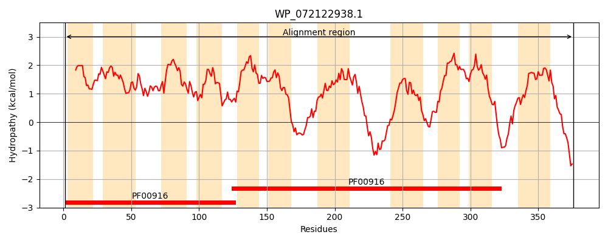
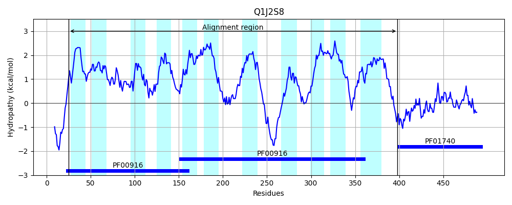
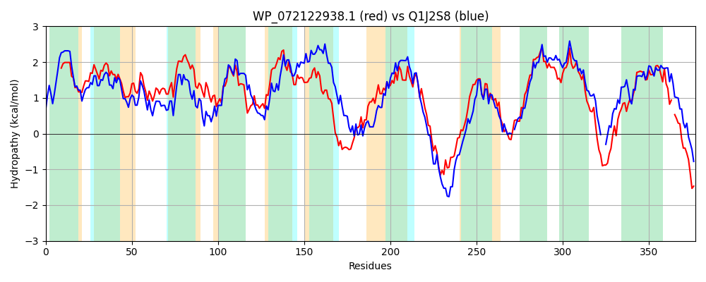

Hit Accession: Q1J2S8
Hit TCID: 2.A.53.3.13
Hit Description: gnl|BL_ORD_ID|12993 gnl|TC-DB|Q1J2S8|2.A.53.3.13 Sulphate transporter OS=Deinococcus geothermalis (strain DSM 11300) GN=Dgeo_2773 PE=1 SV=1
Mach Len: 377
e:0.000000
Query TMS Count : 11
Hit TMS Count: 11
TMS-Overlap Score: 9.300000
Predicted Substrates:CHEBI:42511;fumarate(2-)
BLAST Alignment:
Score: 883 , Bit scores: 344 bits, E-value: 2.4e-115, Alignment length: 377, Percentage identity: 49
Query: 1 MLAGVLSALALIPEVISFSVIAGVDPQVSLVASVVLCLAMSVLGGRPAMVTAAAGSVALVIGPMVHQYGVGYILPAVILAGMIQILFGLCGMARLMRFIPPAVMTGFVNALGILIFFAQVPHFWSRQPLIVGLFVLTLLIVLWAPRFIKAVPAPLIAIVALTLYTVTTGQQLPTVGDEGSMSGGLPGFTALTVPLNLATLQIIWPCALSIAFVGLMESLLTAKLVDDLTHTPSNKSRESAGLGIANILAGCYGGIAGCAMIGQTIVNVEMGRARSRLSTVIAGLVLLLLVTALSQVMAQIPMAVLAGVMVIVAVKTFSWHSIRPGELVRNPWPETLVMLVTVAATVGTSNLAIGVLAGIVAMAL-IPRRLRTKAQAT 376
+LAG++ ALALIPE I+FS+IAGVDPQV L AS ++ L + LGGRP M++AA G++AL++ +V +G+ Y+ A +L G++Q++FG +AR ++F+P +VM GFVNAL ILIF AQ+P F + + L I+ P KA+P+ L+AIV LT+ V TG + TVGD G++ LP F VPL TL II+P AL+++ VGL+ESLLTA+L+D+ T T S+K+ ES G G+ANI+ G +GG+AGCAMIGQ+++NV G R RLST +AG L++L+ AL ++ QIPMA L VM++VA+ TF W S+R L P ET+VML TVA TV T +L++GVL G+V AL R++ +Q T
Sbjct: 25 VLAGIVVALALIPEAIAFSIIAGVDPQVGLYASFIIALITAFLGGRPGMISAATGAMALLMTGLVKDHGIQYLFAATVLTGVLQVVFGWAKLARYLKFVPRSVMVGFVNALAILIFMAQLPQFVGANWQMYAMVAAGLAIIYLLPLVFKAMPSALVAIVVLTVVAVVTGADVKTVGDMGTLPTALPHFQFPQVPLTFETLAIIFPVALTLSLVGLLESLLTAQLIDERTDTTSDKNVESRGQGVANIVTGFFGGMAGCAMIGQSMINVTSG-GRGRLSTFVAGAFLMVLILALQPLLVQIPMAALVAVMMVVAISTFDWGSLR--TLTVFPKGETVVMLATVAVTVFTHDLSLGVLIGVVLSALFFARKVSQLSQVT 398 | Protein Hydropathy Plots: |
|---|
|  |  |
Pairwise Alignment-Hydropathy Plot:
|
|---|
|  |